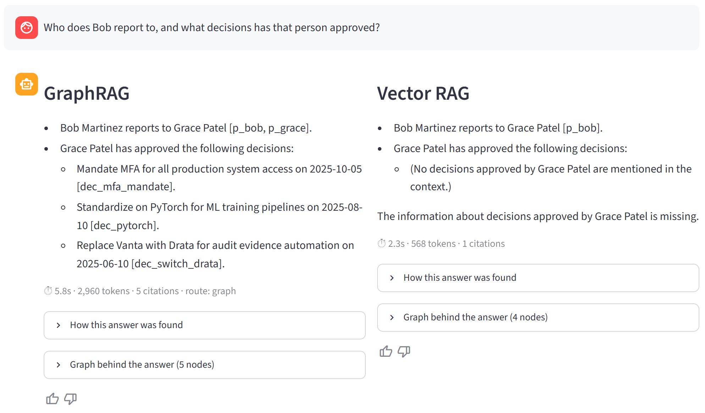
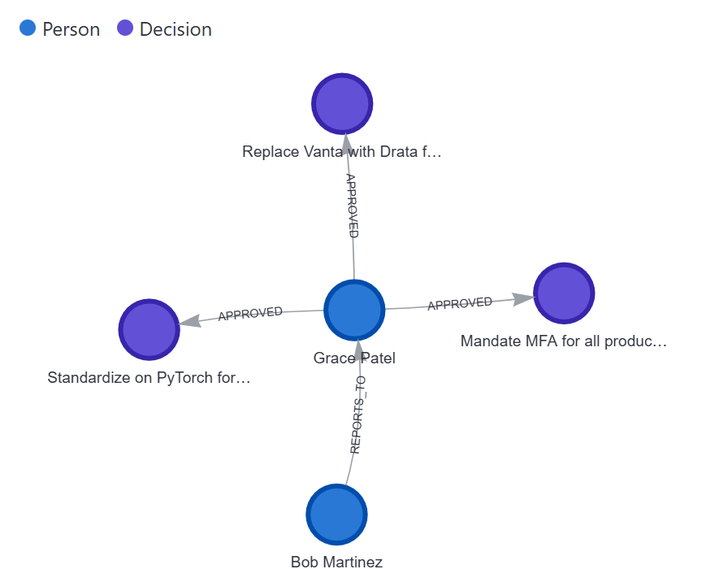
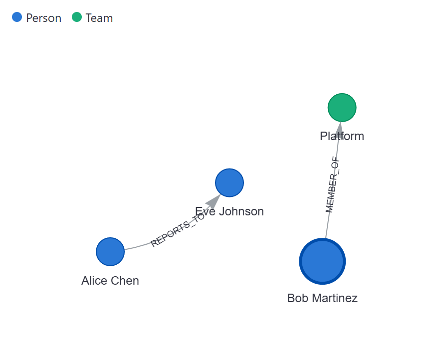
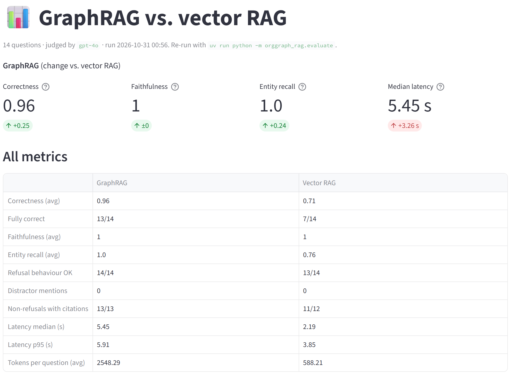
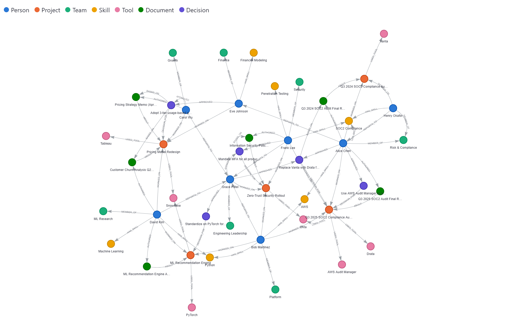

✦✦
✦✦
OrgGraph RAG ✦
GraphRAG for organizational knowledge — people, projects & decisions as a graph 🕸️
Week 2 · Project 3 · Study guide
🧑💼
"Who does Bob report to, and what decisions has that person approved?"
who / which / how manyrelationships
"the last X"why was it decided?
🎯 The one-liner
Help PMs, tech leads & execs answer who/what/why questions from an org knowledge graph in a Streamlit chat —
≥ 90% correct on multi-hop, < 6 s p95.
➜
1💬 Streamlit chat
Ask once → both systems answer in parallel, side by side
2🔀 LangGraph router
graph · semantic · out of scope → refuse
3🕸️ GraphRAG
Text2Cypher → Neo4j Aura → exact rows
+ anchor fallback
4📚 Vector RAG
entity cards → Chroma → top-4 by cosine
5🤖 Shared answer step
same gpt-4o-mini prompt · [id] citations · one refusal sentence
6📊 Evaluation
14 questions × 2 systems · gpt-4o judge · human review
➜
@@G_CORRECT@@ vs @@V_CORRECT@@
avg correctness · GraphRAG vs vector
@@G_FULL@@/@@N@@ vs @@V_FULL@@/@@N@@
fully correct answers
44 · 75
entities · relationships in Neo4j
@@G_P95@@ s
GraphRAG p95 latency ⏱️ (target < 6 s)
@@WINS_G@@ · @@WINS_T@@ · @@WINS_V@@
GraphRAG wins · ties · vector wins
🟢 Neo4j Aura🦜 LangChain🕸️ LangGraph
🧠 OpenAI gpt-4o · gpt-4o-mini🔢 text-embedding-3-small🎨 Chroma
🎈 Streamlit⚡ uv🧪 pytest · 51 tests
# the whole project in five commands
uv sync → uv run python -m orggraph_rag.ingest → uv run python -m orggraph_rag.vector_rag --build
→ uv run python -m orggraph_rag.evaluate → uv run streamlit run app.py
✓Vector search finds similar text. GraphRAG follows relationships. The UI shows both, side by side.1 / 10
✦✦
Modeling knowledge as a graph ✦
Nodes are things people ask about · relationships are how they connect 🔗
Concept · Graph data model
1Schema · 7 node types · 10 relationship types
@@SCHEMA@@
2🧩 Node = entity
A label (:Person) + properties
(name, role, started…). Every node also gets a shared :Entity label
with id · name · description · embedding.
3➡️ Relationship = typed & directed
(Person)-[:WORKED_ON]->(Project). Relationships carry properties too:
{role: "Tech Lead"}, {level: "Expert"}.
4🪤 Built-in traps
- older 2024 audit → "the last audit" needs dates
- Henry · Vanta only belong to 2024 (distractors)
REPORTS_TO → two-hop questionsBASED_ON → "why" provenance
5📈 32 → 44 nodes · 48 → 75 edges
Original
mock_data.py untouched; extension in
mock_data_ext.py. Offline tests pin the gold answers.
# an edge is a tuple: (source_id, target_id, TYPE, properties)
("p_alice", "proj_audit_q3", "WORKED_ON", {"role": "Lead"}) # Alice led the 2025 audit
SCHEMA = [("Person", "WORKED_ON", "Project"), ("Person", "REPORTS_TO", "Person"), ...] # validates every edge · fed to Text2Cypher
✓Model what users ask: who → Person · what → Project/Tool · why → Decision → BASED_ON → Document.2 / 10
✦✦
Loading Neo4j — Cypher you'll reuse ✦
ingest.py is idempotent: run it twice, get the same graph 🔁
Syntax · Neo4j + Cypher
📦datamock_data_ext
➜
🔒constraintsunique ids
➜
🧩MERGE nodesbatched UNWIND
➜
🔗MERGE edges+ properties
➜
🧠embed1536-d vectors
➜
🔎indexesvector + full-text
➜
✅verifycounts + smoke tests
1🔒 Unique constraint
CREATE CONSTRAINT entity_id IF NOT EXISTS
FOR (n:Entity) REQUIRE n.id IS UNIQUE
2🧩 Batch upsert nodes
UNWIND $rows AS row
MERGE (n:Entity {id: row.id})
SET n:Person, n += row.props,
n.embedding = row.embedding
3🔗 Upsert relationships
MATCH (a:Entity {id: row.src}),
(b:Entity {id: row.dst})
MERGE (a)-[r:WORKED_ON]->(b)
SET r += row.props
4🧠 Vector index
CREATE VECTOR INDEX entity_embeddings
FOR (n:Entity) ON (n.embedding)
OPTIONS {indexConfig: {
`vector.dimensions`: 1536,
`vector.similarity_function`: 'cosine'}}
5🔎 Search the indexes
CALL db.index.vector.queryNodes(
'entity_embeddings', 4, $v) YIELD node, score
CALL db.index.fulltext.queryNodes(
'entity_names', 'okta~') YIELD node
6🐍 Python driver
driver.execute_query(cypher, params,
database_=settings.neo4j_database,
routing_=RoutingControl.READ).records
💡 MERGE vs CREATE
MERGE = find-or-create, so re-runs never duplicate. CREATE always adds a new node.
⚠️ Gotcha
CALL {…} IN TRANSACTIONS needs an auto-commit session.run, not execute_query.
🧮 Why 50 / 81 in Browser?
44 entities + 6 :DocChunk nodes; 75 edges + 6 PART_OF links.
🛡️ Safe by default
Stops if another project's data is in the DB; --clear-db to wipe it.
$ uv run python -m orggraph_rag.ingest # prints a verification report every run
Merged 44 entity nodes. · Merged 75 relationships. · Created 6 document chunks.
[ OK ] Entity total: 44 (expected 44) [ OK ] Relationship total: 75 (expected 75)
[ OK ] entity_embeddings: ONLINE [ OK ] entity_names: ONLINE
Last audit (graph): Q3 2025 SOC2 Compliance Audit → people: ['Alice Chen', 'Bob Martinez', 'Frank Lee'] Verification PASSED
✓MERGE makes ingestion re-runnable; vector + full-text indexes make the graph searchable by meaning and by name.3 / 10
✦✦
Vector RAG baseline — a fair fight ✦
Same facts as the graph, so the comparison tests retrieval, not data access ⚖️
Concept · Chunking + top-k
🕸️graph data44 nodes · 75 edges
➜
📝entity cardsnode + all its edges
➜
🧠embedtext-embedding-3-small
➜
🎨Chromacosine · 44 cards
➜
🔝top-4most similar
➜
🤖answergpt-4o-mini
1📝 One entity card = one chunk
Person: Bob Martinez, Senior Engineer on the Platform team.
Worked on: Q3 2025 SOC2 Compliance Audit (role: Evidence Engineer);
ML Recommendation Engine (role: Platform Engineer); Zero-Trust …
Skills: Python (level: Expert); AWS (level: Expert).
Member of team: Platform.
Reports to: Grace Patel.
37–555 chars per card → well inside the embedding model's limit, so no splitting needed.
2🙅 Why not embed the 6 documents?
They never say
who approved a decision or
who was on the audit team. A document-only baseline
would lose for lack of data — an unfair test.
3🔝 The top-k ceiling
@@TOPK@@
4 of 44 cards reach the LLM. "Who worked on
more than one project?" needs every person — no k fits "all entities that satisfy X".
📉 In the eval: vector RAG found 2 of 4 people for Q3 and refused Q4 (tools used by several projects) although the answer existed.
4🤝 Shared answer step
- use ONLY the context
- cite ids:
[proj_audit_q3]
- refuse with one exact sentence
- same model + prompt for both systems
5🧪 Test that keeps it fair
Every relationship must appear on
both endpoint cards.
6📏 Chunk-size rule of thumb
Match chunk size to the embedding model and the content: a card is one idea, so keep it whole. Documents use
RecursiveCharacterTextSplitter(chunk_size=800, chunk_overlap=100) — short docs stay one chunk, long ones split.
Chroma.from_documents(docs, OpenAIEmbeddings(model="text-embedding-3-small"), ids=ids, collection_name="org_entity_cards",
persist_directory="chroma_db", collection_metadata={"hnsw:space": "cosine"})
hits = store.similarity_search_with_relevance_scores(question, k=4) # [(Document, score), ...]
answer = (ANSWER_PROMPT | ChatOpenAI(model="gpt-4o-mini", temperature=0)).invoke({"question": q, "context": ctx})
✓Rich chunks make vector RAG strong on lookups — but top-k is a hard ceiling for counting and hops.4 / 10
✦✦
Text2Cypher — question ➜ query ✦
The LLM writes Cypher from the schema; the graph does the exact work 🧠➡️🧾
Syntax · Cypher patterns
1🧾 What the prompt holds
- 📐 schema: labels, properties, edge directions
- 📇 live catalog of every entity name
- 🏷️ real role & level values
- 🧪 7 few-shot patterns (not eval questions)
- 📏 rules: CONTAINS, dates, collect(DISTINCT), LIMIT 50
2🛡️ Two safety guards
① regex rejects
CREATE MERGE DELETE SET DROP…
② runs in a
READ transaction
↻ one retry with the error message
3⚠️ Prompt gotcha
Cypher maps use
{ } → escape as
{{ }} in a
ChatPromptTemplate, or they become variables.
🔍 Filter by name
MATCH (p:Person)-[w:WORKED_ON]->(proj)
WHERE toLower(p.name) CONTAINS 'carol'
→ case-insensitive partial match on names
🕒 "The last …"
WITH proj ORDER BY
coalesce(proj.ended, date()) DESC LIMIT 1
→ newest first; ongoing projects count as today
🧮 Aggregate
WITH p, collect(proj) AS ps
WHERE size(ps) > 1 // >1 project
→ counting across all nodes (vector RAG can't)
🪜 Two hops
(b:Person)-[:REPORTS_TO]->(m:Person)
-[:APPROVED]->(d:Decision)
→ follow a chain of relationships in one query
🫥 Optional
OPTIONAL MATCH (proj)-[:USED_TOOL]->(t)
// keeps the row even with no tools
→ like a LEFT JOIN: missing links give null
🧭 Path
MATCH path =
shortestPath((a)-[*..5]-(b))
RETURN [n IN nodes(path) | n.name]
→ "how is A connected to B?"
4🐞 Lesson · Q8
Cypher tested
role = 'Lead' but leads are stored as
"Tech Lead".
Fix → show real values +
CONTAINS 'lead'.
5🔁 Lesson · Q9
Seeing "Expert", the model filtered on it and dropped 2 people.
Fix → filter on level only if the question names one.
6🧠 Rule of thumb
Every hint can over-constrain another question →
re-run all 14 after each change.
cypher = strip_fences((CYPHER_PROMPT | ChatOpenAI(model="gpt-4o")).invoke({"question": q, "entity_catalog": catalog, "error_feedback": ""}).content)
if is_read_only(cypher): rows = [r.data() for r in driver.execute_query(cypher, routing_=RoutingControl.READ).records]
✓Give the LLM the schema + real values + patterns; let Cypher do counting, filtering and hops exactly.5 / 10
✦✦
LangGraph pipeline — with a safety net ✦
Nodes do the work · edges decide what happens next · fallbacks instead of guesses 🔀
Syntax · LangGraph StateGraph
@@PIPELINE@@
1🗃️ State
A
TypedDict shared by all nodes: question, route, cypher, rows, sources, path, usage…
2⚙️ Node
A plain function
state → dict; it returns only the keys it changes.
3🔀 Conditional edge
A function reads the state and returns the next node's name.
4⚓ Anchor fallback
Full-text + vector seed entities → 1-hop neighbours as
[id] triples + 2 closest chunks.
class GraphState(TypedDict, total=False):
question: str; route: str; cypher: str; rows: list; sources: list; path: list
g = StateGraph(GraphState)
g.add_node("router", route_question) # + 5 more nodes
g.add_edge(START, "router")
g.add_conditional_edges("run_cypher", after_cypher, ["write_cypher", "anchor", "grade"])
PIPELINE = g.compile()
state = PIPELINE.invoke({"question": q, "path": []})
class Route(BaseModel):
route: Literal["graph", "semantic", "out_of_scope"]
out = (ROUTER_PROMPT | llm.with_structured_output(
Route, include_raw=True)).invoke({"question": q})
out["parsed"].route # typed answer
out["raw"].usage_metadata # token count
PIPELINE.get_graph().draw_mermaid() # --mermaid flag
✓StateGraph + conditional edges turn "try Cypher, check it, fall back" into a clear, testable flow.6 / 10
✦✦
Evaluation — when does the graph win? ✦
14 questions × 2 systems · gpt-4o as judge · every non-perfect score reviewed by hand 📊
Concept · RAG evaluation
1📏 Metrics glossary
| ✅ Correctness | judge vs reference: 1 · ½ · 0 |
| 🔗 Faithfulness | claims backed by context? |
| 🎯 Entity recall | expected names present |
| 🪤 Distractors | Henry / Vanta must not appear |
| 🙅 Refusal | refuse only if unanswerable |
| ⏱️ Latency | warm start, all LLM calls |
| 🪙 Tokens | every call in the pipeline |
2🧑⚖️ Judge the judge
1 of 28 judgments was wrong (a correct date marked wrong) → human-reviewed vector score
@@V_CORRECT@@ (judge: 0.71).
3Quality · overall
GraphRAGVector RAG
@@OVERALL@@
@@G_MEDIAN@@s / @@V_MEDIAN@@s
⏱️ median latency
@@G_TOKENS@@ / @@V_TOKENS@@
🪙 tokens / question
4Correctness by question type
GraphRAGVector RAG
@@CATEGORIES@@
🕸️ GraphRAG wins — aggregation (Q3, Q4), two hops (Q6, Q14), filter + hop (Q8): the answer spans records top-k never sees.
📚 Vector is enough — one-entity lookups & facts inside text tie, at ~@@SPEEDUP@@× less latency and ~@@TOKEN_RATIO@@× fewer tokens.
class Grade(BaseModel):
score: Literal[0, 0.5, 1]; reason: str
judge = PROMPT | ChatOpenAI(model="gpt-4o")
.with_structured_output(Grade)
✓Structure beats similarity when the answer is assembled from many records; on lookups they tie.7 / 10
✦✦
Streamlit ① — how the chat works ✦
Every click re-runs app.py top to bottom · memory lives in st.session_state 🎈
Streamlit · app skeleton & chat flow

Side-by-side mode: GraphRAG finds Grace and her 3 decisions; vector RAG finds Grace but says her decisions are missing.
🔁The rerun model
👆
click / Enter
➜
📜
app.py runs again
➜
🧠
session_state keeps messages
➜
🖼️
history redrawn
🎬 What happens when you press Enter
1 Startup once — @st.cache_resource startup() warms Neo4j, the name catalog and embeddings.
2 Input — st.chat_input or a sidebar example button (stored in session_state.pending).
3 Instant echo — question bubble + spinner "Asking GraphRAG and Vector RAG…".
4 Parallel run — ThreadPoolExecutor runs both systems: wait = the slower one, not the sum.
5 One result type — each returns a RAGResult; errors become a red message, not a crash.
6 Save + redraw — append to session_state.messages → st.rerun().
🧭 3 pages, 1 file —
st.navigation([st.Page(...)]) with clean URLs / · /evaluation · /graph.
⚠️ Gotchas worth remembering
- Slow set-up at top level runs on every click → wrap it in
@st.cache_resource.
- Plain variables reset each rerun → keep history in
st.session_state.
- Widgets in a loop need unique
key=s, or Streamlit raises a duplicate-ID error.
- Change state, then call
st.rerun() to redraw with it.
st.set_page_config(page_title="OrgGraph RAG", page_icon="🕸️", layout="wide")
@st.cache_resource # runs once per server, shared by all sessions
def startup(): graph_rag.warm_up(); vector_rag.retrieve("warm up", k=1)
question = st.chat_input("Ask about the organization…") or st.session_state.pop("pending", None)
with st.chat_message("assistant"), st.spinner("Asking…"): results = run_systems(question, MODES[mode])
messages.append({"question": question, "results": results}); st.rerun()
✓Streamlit = rerun the script + session_state for memory + cache_resource for expensive set-up.8 / 10
✦✦
Streamlit ② — showing its work ✦
Two expanders open the black box: the steps & sources, and the graph behind the answer 🔍
Streamlit · rendering & explainability
"How this answer was found": path chips · generated Cypher · every source with ✅ when cited.

GraphRAG: one connected path Bob → Grace → 3 decisions (cited = bigger).

Vector RAG: 4 disconnected cards — Grace never retrieved.
1🕸️ Subgraph view
subgraph(sources) collects cited ids → one read-only Cypher fetches their edges →
graph_html() draws it with vis-network in
components.html.
2🔑 Why a custom component?
streamlit-agraph has no
key → the same graph twice on a page crashes. Widget keys must be
unique:
key=f"fb_{i}_{system}".
3👍 Feedback loop
st.feedback +
on_change → appends {question, system, thumbs_up, answer, citations} to
feedback.jsonl.
for col, (system, result) in zip(st.columns(2), results.items()): # side-by-side
with col: st.subheader(SYSTEMS[system][0]); st.markdown(result.answer); st.caption("⏱ 6.6s · 2,960 tokens · 5 citations · route: graph")
with st.expander("How this answer was found"): st.code(result.extra["cypher"], language="cypher")
components.html(graph_html(nodes, edges, highlight=result.citations), height=370)
st.feedback("thumbs", key=key, on_change=log_feedback, args=(key, question, system, result))
✓Trust comes from showing the evidence: the route, the query, the sources and the subgraph.9 / 10
✦✦
Streamlit ③ — dashboard, explorer & cheat sheet ✦
Evaluation results and the whole graph, one click from the chat 🧭
Streamlit · data pages

📊 Evaluation: reads eval/results.jsonl → same system_summary() as the CLI report → metrics, table, Altair chart, answer inspector.

🗺️ Knowledge graph: 2 read-only Cypher queries · node-type filter · same vis-network renderer.
1🎈 Streamlit cheat sheet (used in this app)
st.chat_input / chat_message | chat box and bubbles |
st.columns(2) | side-by-side answers |
st.expander · st.code | "how it was found", Cypher |
st.metric(delta=…) | GraphRAG vs vector deltas |
st.dataframe · st.altair_chart | tables and the 0–1 bar chart |
st.selectbox · st.multiselect | pick a question, filter node types |
st.feedback · st.toast | 👍/👎 and "feedback saved" |
components.html | embed the vis-network graph |
🧱 cache_resource
Connections, models, warm-up — one shared object, never copied.
📦 cache_data
Data results (questions list, chunk ids) — returned as a fresh copy.
🛟 Robust by design
Paused Aura → clear fix-it message +
st.stop() · validated colour palette everywhere · tested end to end in a browser.
col.metric("Correctness", "0.96", delta="+0.25", help="Vector RAG: 0.71")
st.altair_chart(alt.Chart(df).mark_bar().encode(x=alt.X("correctness:Q", scale=alt.Scale(domain=[0, 1])), y="category:N", yOffset="system:N", color="system:N"), width="stretch")
kinds = st.multiselect("Node types", list(KIND_COLORS), default=list(KIND_COLORS))
✓One app, three views: ask 💬 · measure 📊 · explore 🗺️ — each backed by the same code as the CLI.10 / 10